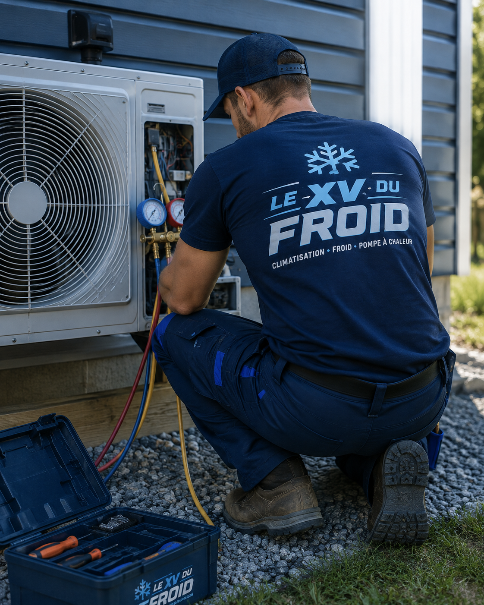
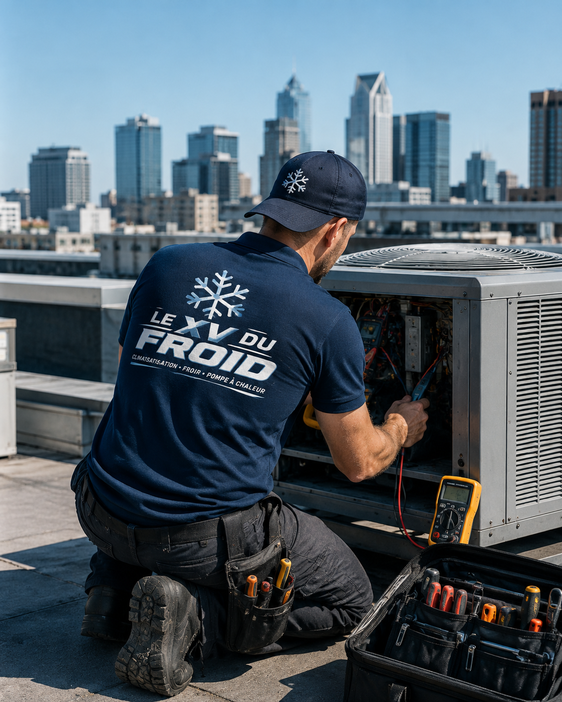
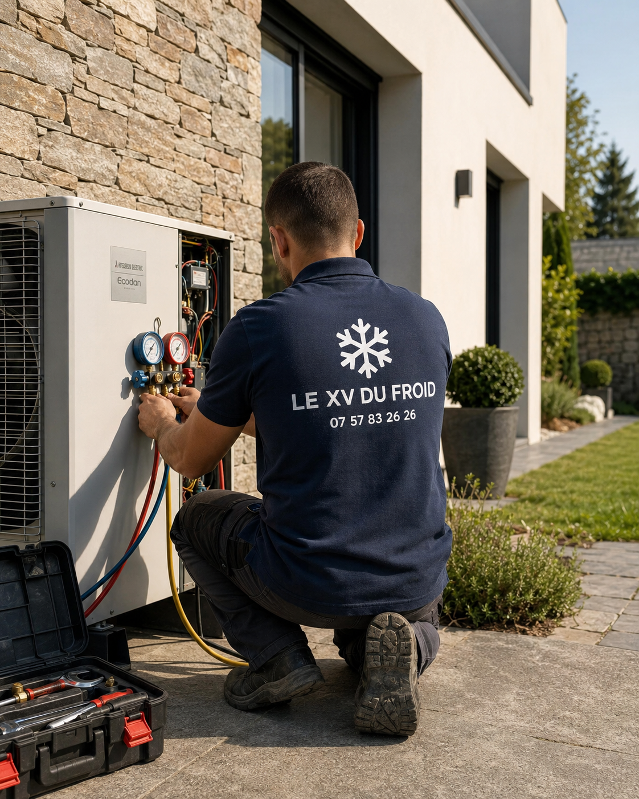

Froid faible, fuite, bruit, code erreur ou panne totale.
Dépannage de climatisation
Votre clim lâche ? On cherche la cause, puis on répare.
Manque de froid, fuite d’eau, bruit, code erreur ou arrêt complet : on contrôle l’appareil, on vous explique la panne et on remet en route quand c’est possible.
- Pannes bloquantes priorisées
- Toutes marques
- Prix annoncé avant réparation

Alimentation, filtres, condensats, unités intérieure et extérieure.
Nettoyage, réparation, pièce à prévoir ou remplacement si nécessaire.
Le prix est annoncé avant la réparation.
Pannes fréquentes
Les pannes que l’on voit le plus souvent chez nos clients.
Une clim en panne donne souvent des signes simples avant de s’arrêter complètement. Voilà ce que l’on contrôle en priorité pendant le dépannage.
La clim ne refroidit plus
Souffle tiède, manque de froid, pièce qui ne descend plus en température.
De l’eau coule sous l’unité
Évacuation bouchée, bac à condensats sale ou pente mal réglée.
Un bruit inhabituel apparaît
Vibration, frottement, ventilateur bruyant ou unité extérieure anormale.
Voyant, code erreur ou arrêt seul
L’appareil se met en sécurité : on contrôle l’alimentation et les organes essentiels.
Avant de rappeler la clim
☎07 57 83 26 26
Coupez l’appareil si l’eau coule ou si le bruit est fort. Gardez la marque et le code erreur si vous l’avez.

Diagnostic & réparation
Un diagnostic précis avant toute réparation.
Une panne peut venir d’un filtre encrassé, d’une évacuation bouchée, d’un défaut électrique, d’une sonde, d’un compresseur ou d’un problème de fluide. Nous recherchons la cause avant d’intervenir, puis vous expliquons clairement la solution.
- Contrôle des filtres, du soufflage et de l’alimentation
- Vérification des condensats et des codes erreur
- Réparation ou remplacement de pièce
- Remise en service et test de fonctionnement
Réparation climatiseur
Dépannage et réparation de climatisation, toutes marques.
Le XV du Froid intervient pour le dépannage de climatisation réversible, mono-split, multi-split, console, cassette et gainable, chez les particuliers comme dans les locaux professionnels. L’idée : remettre votre clim en service rapidement, avec une explication simple et un prix annoncé avant la réparation.
Pour les pannes bloquantes, nous proposons une intervention prioritaire selon le secteur et la disponibilité. Selon le diagnostic, nous réalisons un nettoyage, une réparation, un remplacement de pièce ou une remise en service complète.
Que faire en cas de panne ?
Avant de nous appeler, vérifiez le mode sélectionné, la température demandée et l’état des filtres. Si le problème persiste, coupez l’appareil et contactez-nous : un diagnostic sur place permet d’identifier précisément l’origine de la panne.
- Climatisation qui souffle chaud ou ne refroidit plus
- Fuite d’eau et évacuation des condensats bouchée
- Bruit anormal, vibration ou mauvaise odeur
- Code erreur, clim qui ne s’allume plus ou s’arrête seule
Offre climatisation
Réparation trop coûteuse ? Pensez au remplacement.
Installation comprise, mise en service et garantie. Devis gratuit et sans engagement.
Voir l’installation
à partir de
29€/mois
Financement possible
Comment ça se passe
Un dépannage clair, du premier appel à la remise en service.
Appel
Vous décrivez la panne, la marque, le modèle et les symptômes.
Diagnostic
Le technicien contrôle les éléments essentiels sur place.
Devis
Vous validez la réparation et le prix avant l’intervention.
Remise en service
Nous testons le fonctionnement avant de repartir.
Questions fréquentes
Dépannage climatisation : vos questions.
Ma climatisation souffle chaud, que faire ?
Vérifiez le mode sélectionné, la température demandée et l’état des filtres. Si le problème continue, un diagnostic est nécessaire pour en identifier la cause.
Intervenez-vous pour une panne bloquante ?
Oui. Nous priorisons les pannes bloquantes selon le secteur, la disponibilité et le type d’appareil.
Combien coûte un dépannage de climatisation ?
Le prix dépend de la panne et de la pièce à remplacer. On annonce le montant avant de réparer, et vous validez avant toute intervention.
Une fuite d’eau est-elle grave ?
Elle vient souvent d’une évacuation bouchée ou d’un défaut d’installation. Mieux vaut intervenir rapidement pour éviter les dégâts sur les murs et le mobilier.
Intervenez-vous sur toutes les marques ?
Oui, nous réparons les climatiseurs des principales marques : Daikin, Mitsubishi Electric, Atlantic, Toshiba, Hitachi, Panasonic, LG et Samsung.

Panne climatisation
Votre climatisation est en panne ?
Contactez-nous pour un dépannage rapide et un diagnostic clair.
07 57 83 26 26 Demander un devis